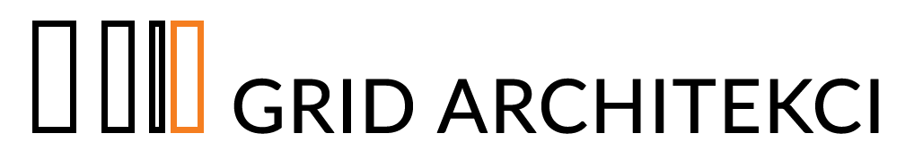

PL
/
EN
{{ item.label }}
{{ awards.title }}
{{ awards.intro }}
{{ h.year }}
{{ h.result }}
{{ h.name }}
{{ h.note }}
→
{{ awards.colYear }}
{{ awards.colName }}
{{ awards.colProject }}
{{ awards.colResult }}
{{ r.year }}
{{ r.name }}
{{ r.project }}
{{ r.result }}
{{ pubs.label }}
{{ pubs.note }}
{{ p.title }}
{{ p.kind }}
{{ p.year }}